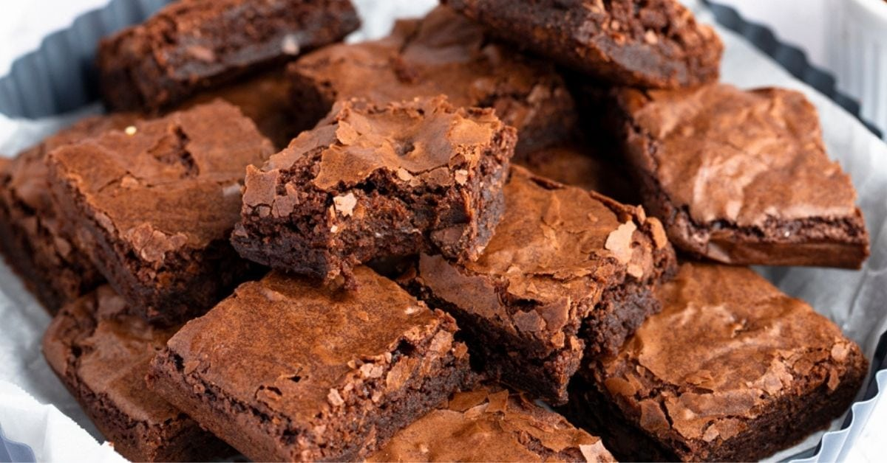

Ghirardelli Brownies

INGREDIENTS
- 4 ounces of Ghirardelli Semi Sweet Chocolate Baking Bar
- 1/2 cup of butter, unsalted, cut into pieces
- 1 Cup of brown sugar
- 1 teaspoon Vanilla extract
- 2 Large Eggs
- 3/4 cup + 2 tablespoons All-Purpose flour
- 1/4 teaspoon Baking powder
- 3/8 teaspoon Salt
- 1/2 cup Chocolate Chips
DIRECTIONS
- Preheat oven to 350F
- Butter and flour an 8 inch square baking pan
- Chop the 4 ounces of semi sweet bars into 1 inch piences
- In the top of a double boiler or in a heatproof
bowl over barely simmering water, melt the 4 chopped
chocolate and butter, stirring occasionally until smooth
- Romove the pan from the heat and let cool to room temperature
- Stir the brown sugar and vanilla into the chocolate mixture
- Add the eggs and mix well. In bowl, sift together flour, baking powder, and salt
- Slowly flod the flour mixture into the chocolate mixture mixing well until blended
- Stir in the chocolate chips and pour the batter into the prepared pan.
- Bake for 25 to 30 Minutes, unitl tester comes out clean
- Remove from the oven and cool chocolate brownies for at leaste
10 minutes before cutting into 2 inch squares